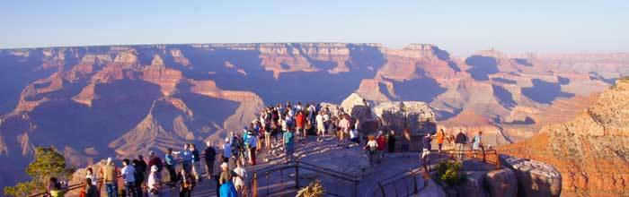
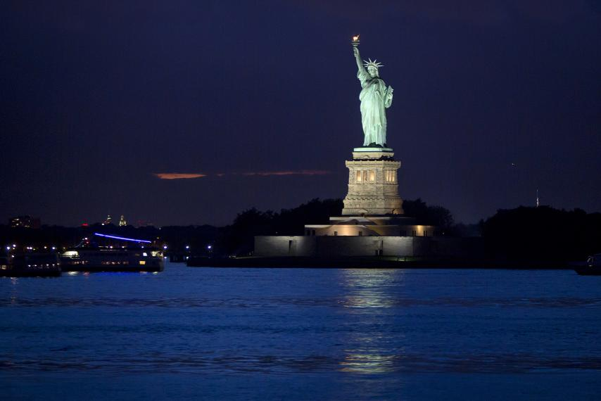
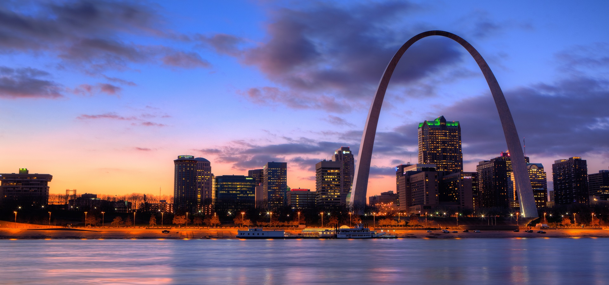

Lake Michigan
I like to visit the places which are filled with natural beauty. Lake Michigan is one of such places. Lake Michigan is one of the five Great Lakes of North America. Lake Michigan Beach is an unincorporated community in Berrien County in the U.S. state of Michigan. It is the second largest of the Great Lakes by volume.

Niagara Falls
This is another example of natural beauty. I had been reading about the falls of geographycourse of studyin my school, so I was always eager to visit the falls. It is the collective name for three waterfalls that straddle the international border between the Canadian province Ontario and the American state of New York.Beautiful huge waterfall view that makes human mind wet. Watching Naigara falls was a memorial experience for me. Wonderful ‘Maid of the Mist’ boat tour of the falls gives a closer glance of the falls.
Grand Canyon national park
Millions of years of geological history gets revealed while looking at the red hard rocks placed at grand canyon. Mather Point, Yavapai Observation Station and architect Mary Colter’s Lookout Studio and her Desert View Watchtower are some of the popular attractions for visitor. I made the trip of south rim. standing on Mather or Yaki Point and watching the sunrise and sunset over the East Rim was a great experience
Statue of Liberty (NY)
The Statue of Liberty is a colossal neoclassical sculpture on Liberty Island in New York Harbor in New York City, in the United States. The copper statue,a gift from the people of France to the people of the United States, was designed by French sculptor Frédéric Auguste Bartholdi and built by Gustave Eiffel.Though this is manmade sculpture, it is United state’s landmark and a welcoming sigh for those who enter through NewYork.
Disneyland park
Beautiful theme park that took me in the fairy tales that I have been listening since my childhood. The park is created under supervision of the Walt Disney who was a pioneer of the American animation industry. The park is a dream for every child these days.
Las Vegas
I was amazed when I read about the Vegas' history. The strip and the city was build to produce revenue and jobs for the people at such a dessert place as the effect of gaming and tourism.This is really "Fabulous Las Vegas" as they call it.
Saint Louis
The first place I started living in United States was Saint Louis. It has become my hometown now as I have been living here since 6 years and I have explored the city all the way. A very good place to live. Far from metropolitian rush, crowds and traffic and still a place of music, art and worship. Foody person like me, have explored some of the foods that are known to have originated in saint louis such as Ted Drews frozen Yogurt, Saint Louis stype-pizza & Gooey Butter cake.
